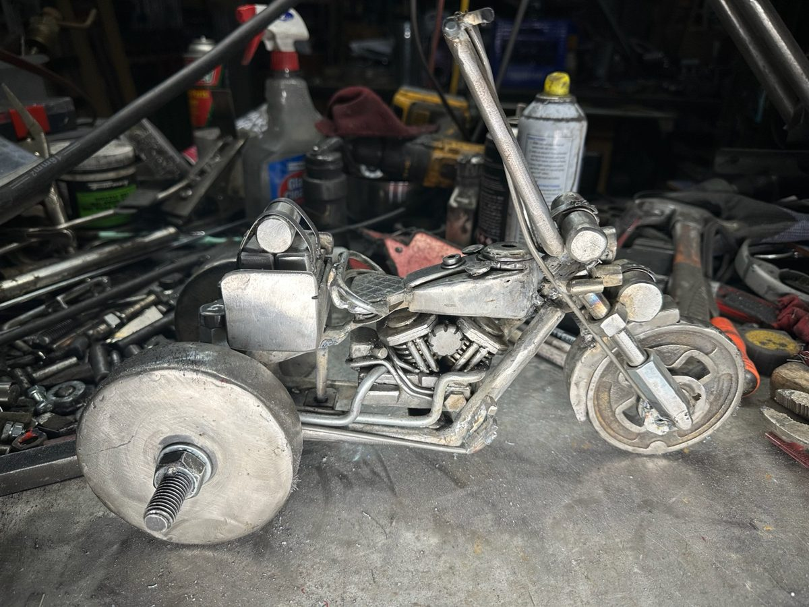

Featured Work
A taste of what's on Ken's bench. The full set is on the gallery page.

Metal Camper Trailer
All metal, down to the rivets — and the door opens onto a finished tiny interior.

Motorcycle Trike
A full trike built from scrap — V-twin engine, chain drive, ape hangers.

Scrap Tractor
Built around salvaged machine parts — even a spoon finds a second job.